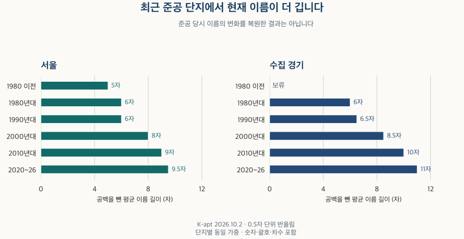

아파트의 진화 · 단지 이름
아파트 이름, 준공 연대별로 얼마나 길까? 서울·경기 비교
서울·수집 경기의 현재 아파트 이름을 준공 연대별로 비교합니다. 이름 길이, 파크·센트럴·리버, 브랜드 결합과 표기 차이를 살펴보고 과거 명칭·개명 이력의 한계를 구분합니다.
분석 기간 · 현재 이름 2026.10.2 · 등록 변화 2026.4~10 | 자료 기준일 · 공식 안내 확인 2026-10-16
아파트 이름을 한 번에 읽기 어려웠던 적이 있나요? 지명과 브랜드, 단지 번호에 ‘파크’나 ‘센트럴’ 같은 단어까지 붙으면 이름이 길어집니다. 서울·수집 경기의 현재 등록 이름을 준공 연대별로 나눠 길이와 단어의 구성을 살펴봤습니다.
띄어쓰기와 단지 번호도 글자 수에 넣었나요?
기본 비교에서는 공백을 빼고, 숫자·괄호·기호·차수와 ‘아파트’라는 말은 남겼습니다. 비슷하게 보이는 전각 문자 등을 같은 표기로 정리한 뒤 컴퓨터의 문자 단위로 셌습니다. 발음할 때의 음절 수나 사람이 느끼는 읽기 어려움과 같은 척도는 아닙니다.
K-apt 공동주택관리정보의 등록 이름을 기본으로 삼았습니다. 같은 단지라도 실거래 기반 자료의 이름은 줄여 적히거나 단지 번호와 띄어쓰기가 다를 수 있습니다. 어느 이름이 더 길다는 사실만으로 한쪽이 틀렸다고 판정하지 않습니다.
‘가나다 1차(A)’에서 공백만 빼면 숫자와 괄호도 이름 길이에 들어갑니다. 문자·숫자만 세면 괄호가 빠집니다. 이 글은 유리한 결과가 나오는 규칙을 고르는 대신 세 규칙의 결과를 함께 비교합니다.
최근 준공 아파트의 이름은 얼마나 더 길까요?
두 지역 모두 최근 준공 연대에서 평균 길이가 더 길게 나타납니다. 서울은 1990년대 약 6자에서 2020~2026년 약 9.5자, 수집 경기는 약 6.5자에서 약 11자입니다. 단지마다 같은 가중치를 준 평균이며, 전국의 분양 이름이나 과거 당시 이름의 평균은 아닙니다.

| 지역·준공 연대 | 평균 | 중앙값 | 가운데 50% | 세대수 가중 평균 | 확인 단지 비중 |
|---|---|---|---|---|---|
| 서울 · 전체 | 7.5자 | 7자 | 6–9자 | 7.5자 | 20–30% |
| 서울 · 1980년 이전 | 5자 | 5자 | 4–5자 | 5자 | 10–20% |
| 서울 · 1980년대 | 6자 | 6자 | 4–7자 | 6자 | 50–60% |
| 서울 · 1990년대 | 6자 | 6자 | 4–7자 | 6자 | 40–50% |
| 서울 · 2000년대 | 8자 | 8자 | 7–9자 | 7.5자 | 20–30% |
| 서울 · 2010년대 | 9자 | 9자 | 7–10자 | 9자 | 30–40% |
| 서울 · 2020~2026년 | 9.5자 | 9자 | 8–11자 | 9.5자 | 30–40% |
| 서울 · 연도 미상 | 보류 | 보류 | 보류 | 보류 | 자료 부족 |
| 수집 경기 · 전체 | 8.5자 | 8자 | 6–11자 | 9자 | 50–60% |
| 수집 경기 · 1980년 이전 | 보류 | 보류 | 보류 | 보류 | 자료 부족 |
| 수집 경기 · 1980년대 | 6자 | 6자 | 4–7자 | 6자 | 10–20% |
| 수집 경기 · 1990년대 | 6.5자 | 6자 | 4–8자 | 7자 | 50–60% |
| 수집 경기 · 2000년대 | 8.5자 | 8자 | 7–10자 | 8.5자 | 50–60% |
| 수집 경기 · 2010년대 | 10자 | 10자 | 8–12자 | 10.5자 | 60–70% |
| 수집 경기 · 2020~2026년 | 11자 | 11자 | 9–13자 | 11.5자 | 50–60% |
| 수집 경기 · 연도 미상 | 보류 | 보류 | 보류 | 보류 | 자료 부족 |
평균만으로 모든 단지를 설명할 수는 없습니다. 2020~2026년 단지 이름의 가운데 50%는 서울 약 8~11자, 수집 경기 약 9~13자입니다. 서울 2000년대의 약 7~9자와도 일부 겹칩니다. 이름이 긴 단지를 보고 준공연도를 맞히는 규칙으로 쓰기 어렵습니다.
세대수 가중 평균은 큰 단지에 더 큰 비중을 줍니다. 수집 경기 전체에서는 단지 동일 가중 평균 약 8.5자, 세대수 가중 평균 약 9자로 표시됩니다. 세대수가 알려지고 이름을 확인한 단지들 사이의 비교이며, 모든 가구가 사용하는 이름의 평균은 아닙니다.
공백과 기호 처리에 따른 평균 길이 비교
| 지역·준공 연대 | 공백 제외 | 공백 포함 | 문자·숫자만 |
|---|---|---|---|
| 서울 · 전체 | 7.5자 | 7.5자 | 7.5자 |
| 서울 · 1980년 이전 | 5자 | 5자 | 5자 |
| 서울 · 1980년대 | 6자 | 6자 | 6자 |
| 서울 · 1990년대 | 6자 | 6자 | 6자 |
| 서울 · 2000년대 | 8자 | 8자 | 8자 |
| 서울 · 2010년대 | 9자 | 9자 | 9자 |
| 서울 · 2020~2026년 | 9.5자 | 10자 | 9.5자 |
| 서울 · 연도 미상 | 보류 | 보류 | 보류 |
| 수집 경기 · 전체 | 8.5자 | 9자 | 8.5자 |
| 수집 경기 · 1980년 이전 | 보류 | 보류 | 보류 |
| 수집 경기 · 1980년대 | 6자 | 6자 | 6자 |
| 수집 경기 · 1990년대 | 6.5자 | 6.5자 | 6.5자 |
| 수집 경기 · 2000년대 | 8.5자 | 8.5자 | 8.5자 |
| 수집 경기 · 2010년대 | 10자 | 10.5자 | 10자 |
| 수집 경기 · 2020~2026년 | 11자 | 12자 | 11자 |
| 수집 경기 · 연도 미상 | 보류 | 보류 | 보류 |
최근 연대의 수집 경기에서는 공백을 포함한 평균이 약 12자로, 공백을 뺀 약 11자와 다릅니다. 문자·숫자만 남기는 계산에서도 최근 연대가 더 긴 흐름은 유지됩니다. 같은 표시값으로 반올림됐다고 원래 값까지 같은 것은 아닙니다.
‘파크·센트럴·리버’는 언제부터 이름에 쓰였나요?
최초 사용 시기는 이 자료로 확인할 수 없습니다. 현재 이름에 들어 있는 단어를 준공 연대별로 비교할 수는 있지만, 오래된 단지가 나중에 이름을 바꿨을 수 있습니다. 아래 표의 연대는 그 단어의 등장 연도가 아닙니다.
원래 질문에 나온 ‘파크’·‘센트럴’·‘리버’ 세 문자열을 정해 포함 여부를 확인했습니다. 모든 외래어를 분류한 결과는 아닙니다. 부분적으로 들어 있어도 포함으로 세므로, 브랜드 자체에 ‘파크’가 들어 있는 경우와 브랜드 밖에 덧붙은 경우를 나누어 보여줍니다.
| 지역·준공 연대 | 파크 | 센트럴 | 리버 | 브랜드 밖 파크 | 브랜드 밖 센트럴 | 브랜드 밖 리버 |
|---|---|---|---|---|---|---|
| 서울 · 전체 | 5% | 0% | 0% | 5% | 0% | 0% |
| 서울 · 1980년 이전 | 0% | 0% | 0% | 0% | 0% | 0% |
| 서울 · 1980년대 | 보류 | 0% | 0% | 보류 | 0% | 0% |
| 서울 · 1990년대 | 보류 | 0% | 보류 | 보류 | 0% | 보류 |
| 서울 · 2000년대 | 10% | 보류 | 5% | 5% | 보류 | 5% |
| 서울 · 2010년대 | 10% | 5% | 5% | 10% | 5% | 0% |
| 서울 · 2020~2026년 | 15% | 10% | 보류 | 10% | 10% | 보류 |
| 서울 · 연도 미상 | 보류 | 보류 | 보류 | 보류 | 보류 | 보류 |
| 수집 경기 · 전체 | 5% | 5% | 0% | 5% | 5% | 0% |
| 수집 경기 · 1980년 이전 | 보류 | 보류 | 보류 | 보류 | 보류 | 보류 |
| 수집 경기 · 1980년대 | 0% | 0% | 0% | 0% | 0% | 0% |
| 수집 경기 · 1990년대 | 0% | 보류 | 보류 | 보류 | 보류 | 보류 |
| 수집 경기 · 2000년대 | 5% | 0% | 0% | 5% | 0% | 0% |
| 수집 경기 · 2010년대 | 10% | 10% | 0% | 10% | 10% | 0% |
| 수집 경기 · 2020~2026년 | 15% | 10% | 0% | 10% | 10% | 보류 |
| 수집 경기 · 연도 미상 | 보류 | 보류 | 보류 | 보류 | 보류 | 보류 |
2020~2026년에는 두 지역 모두 ‘파크’가 들어간 비율이 약 15%, ‘센트럴’은 약 10%입니다. 등록 브랜드의 일부인 경우를 빼면 ‘파크’는 두 지역 모두 약 10%로 표시됩니다. 처음 세 열의 분모는 이름을 확인한 단지이고, ‘브랜드 밖’ 열의 분모는 브랜드 분류까지 가능한 단지입니다. 이름에 적힌 단어만으로 공원·강 조망이나 중심 입지를 확인할 수는 없습니다.
포함률은 5%포인트 단위로 반올림했습니다. 0%는 한 곳도 없다는 뜻이 아니며, 보류도 0%가 아닙니다. 적은 관측으로 구성된 범주를 공개하지 않았습니다. 여러 단어를 함께 쓰는 이름이 있으므로 단어별 비율을 더해 전체 포함률을 만들지 않습니다.
브랜드와 다른 단어를 함께 쓰는 이름은 얼마나 될까요?
현재 이름에서 등록된 브랜드 표현을 확인한 비율은 서울 전체 약 35%, 수집 경기 전체 약 30%입니다. 2020~2026년 준공 단지에서는 각각 약 60%, 약 50%로 표시됩니다. 비교에 쓴 브랜드 목록에 이름이 맞는지를 확인한 결과이며, 시공사를 보고 브랜드를 추정하지 않았습니다.
| 지역·준공 연대 | 등록 브랜드 포함 | 세 문자열 중 하나 | 브랜드 밖 문자열 | 브랜드와 문자열 동시 | 브랜드와 바깥 문자열 동시 |
|---|---|---|---|---|---|
| 서울 · 전체 | 35% | 10% | 5% | 5% | 5% |
| 서울 · 1980년 이전 | 0% | 0% | 0% | 0% | 0% |
| 서울 · 1980년대 | 15% | 보류 | 보류 | 0% | 0% |
| 서울 · 1990년대 | 25% | 보류 | 보류 | 보류 | 보류 |
| 서울 · 2000년대 | 35% | 10% | 10% | 5% | 0% |
| 서울 · 2010년대 | 55% | 15% | 10% | 10% | 10% |
| 서울 · 2020~2026년 | 60% | 20% | 20% | 15% | 15% |
| 서울 · 연도 미상 | 보류 | 보류 | 보류 | 보류 | 보류 |
| 수집 경기 · 전체 | 30% | 10% | 10% | 5% | 5% |
| 수집 경기 · 1980년 이전 | 보류 | 보류 | 보류 | 보류 | 보류 |
| 수집 경기 · 1980년대 | 15% | 0% | 0% | 0% | 0% |
| 수집 경기 · 1990년대 | 10% | 0% | 0% | 보류 | 0% |
| 수집 경기 · 2000년대 | 25% | 10% | 5% | 5% | 0% |
| 수집 경기 · 2010년대 | 45% | 20% | 15% | 10% | 10% |
| 수집 경기 · 2020~2026년 | 50% | 20% | 20% | 10% | 10% |
| 수집 경기 · 연도 미상 | 보류 | 보류 | 보류 | 보류 | 보류 |
최근 연대에서 브랜드와 브랜드 밖의 세 문자열 중 하나가 함께 나타난 비율은 서울 약 15%, 수집 경기 약 10%입니다. 이는 이름의 구성에 관한 결과입니다. 브랜드가 길이 증가의 원인이라는 인과효과나, 긴 이름이 더 좋은 주거 조건을 뜻한다는 결론은 아닙니다.
목록에 맞지 않는 이름을 모두 ‘무브랜드 아파트’라고 부를 수는 없습니다. 여러 브랜드가 함께 적힌 이름은 명확한 일치 표현이 있으면 포함했고, 충돌하거나 확인이 필요한 이름은 분류를 보류했습니다. 브랜드 관련 비율은 분류 가능한 이름이 분모이며, 그 범위도 아래에 따로 표시합니다.
등록 자료가 전체 단지를 얼마나 포괄하나요?
기본 비교에서 이름을 확인한 단지는 보유 전체 단지의 서울 20~30%, 수집 경기 50~60% 구간입니다. 세대수가 알려진 전체 단지의 세대수 합계로 보면 각각 70~80%, 90~100% 구간입니다. 큰 단지가 상대적으로 더 많이 포함될 수 있어 두 비율을 함께 봐야 합니다.
연대별 자료 확인 범위 펼치기
| 지역·준공 연대 | 단지 기준 | 알려진 세대수 기준 | 세대수 미상 단지 | 두 원천 이름 일치 | 브랜드 분류 가능 |
|---|---|---|---|---|---|
| 서울 · 전체 | 20–30% | 70–80% | 0–10% | 20–30% | 90–100% |
| 서울 · 1980년 이전 | 10–20% | 60–70% | 20–30% | 0–10% | 90–100% |
| 서울 · 1980년대 | 50–60% | 80–90% | 20–30% | 10–20% | 90–100% |
| 서울 · 1990년대 | 40–50% | 80–90% | 0–10% | 10–20% | 90–100% |
| 서울 · 2000년대 | 20–30% | 70–80% | 0–10% | 20–30% | 90–100% |
| 서울 · 2010년대 | 30–40% | 80–90% | 0–10% | 50–60% | 90–100% |
| 서울 · 2020~2026년 | 30–40% | 70–80% | 0–10% | 50–60% | 90–100% |
| 서울 · 연도 미상 | 자료 부족 | 자료 부족 | 자료 부족 | 자료 부족 | 자료 부족 |
| 수집 경기 · 전체 | 50–60% | 90–100% | 10–20% | 20–30% | 90–100% |
| 수집 경기 · 1980년 이전 | 자료 부족 | 자료 부족 | 20–30% | 자료 부족 | 자료 부족 |
| 수집 경기 · 1980년대 | 10–20% | 60–70% | 20–30% | 10–20% | 90–100% |
| 수집 경기 · 1990년대 | 50–60% | 80–90% | 10–20% | 10–20% | 90–100% |
| 수집 경기 · 2000년대 | 50–60% | 90–100% | 0–10% | 20–30% | 90–100% |
| 수집 경기 · 2010년대 | 60–70% | 90–100% | 0–10% | 30–40% | 90–100% |
| 수집 경기 · 2020~2026년 | 50–60% | 80–90% | 0–10% | 40–50% | 90–100% |
| 수집 경기 · 연도 미상 | 자료 부족 | 자료 부족 | 자료 부족 | 자료 부족 | 자료 부족 |
이름 일치는 해당 표에서 선택한 단지 중 공백과 표기를 정리한 두 원천의 이름이 같은 비율입니다. 한쪽 이름을 확인하지 못한 단지는 일치로 세지 않았으므로, 나머지를 모두 이름이 다른 단지로 해석하지 않습니다. 단지 정체성의 일치율이나 이름의 정확도를 평가한 값은 아닙니다. 구간은 하한을 포함하고 상한은 포함하지 않으며, 90~100%만 100%를 포함합니다. 알려진 세대수 기준에는 세대수가 없는 단지가 포함되지 않습니다.
같은 단지의 실거래 기반 이름으로 바꾸면 전체 평균은 서울 약 6.5자, 수집 경기 약 8자입니다. 기본 등록 이름의 약 7.5자·8.5자보다 짧습니다. 이름이 수집·기재되는 방식 자체가 결과의 수준에 영향을 줍니다.
실거래 기반 이름을 확인할 수 있는 전체 단지로 넓힌 비교와 기본 연결 방식의 단지만 남긴 비교도 아래에 제시했습니다. 두 지역에서 최근 준공 연대의 평균이 1990년대보다 길다는 흐름은 유지되지만, 길이의 수준과 비교 대상은 달라집니다.
같은 단지의 실거래 기반 이름 · 연대별 비교 펼치기
| 지역·준공 연대 | 평균 | 공백 포함 | 문자·숫자만 | 중앙값 | 가운데 50% | 세대수 가중 평균 | 단지 확인 | 세대수 확인 | 세대수 미상 | 이름 일치 |
|---|---|---|---|---|---|---|---|---|---|---|
| 서울 · 전체 | 6.5자 | 6.5자 | 6.5자 | 6자 | 4–8자 | 6.5자 | 20–30% | 70–80% | 0–10% | 20–30% |
| 서울 · 1980년 이전 | 3자 | 3자 | 3자 | 2자 | 2–4자 | 3.5자 | 10–20% | 60–70% | 20–30% | 0–10% |
| 서울 · 1980년대 | 5자 | 5자 | 4.5자 | 4자 | 3–7자 | 6자 | 50–60% | 80–90% | 20–30% | 10–20% |
| 서울 · 1990년대 | 4.5자 | 4.5자 | 4.5자 | 4자 | 3–6자 | 5자 | 40–50% | 80–90% | 0–10% | 10–20% |
| 서울 · 2000년대 | 7자 | 7자 | 7자 | 7자 | 5–8자 | 7자 | 20–30% | 70–80% | 0–10% | 20–30% |
| 서울 · 2010년대 | 8.5자 | 8.5자 | 8자 | 8자 | 7–10자 | 8.5자 | 30–40% | 80–90% | 0–10% | 50–60% |
| 서울 · 2020~2026년 | 9자 | 9자 | 9자 | 9자 | 7–10자 | 8.5자 | 30–40% | 70–80% | 0–10% | 50–60% |
| 서울 · 연도 미상 | 보류 | 보류 | 보류 | 보류 | 보류 | 보류 | 자료 부족 | 자료 부족 | 자료 부족 | 자료 부족 |
| 수집 경기 · 전체 | 8자 | 8자 | 7.5자 | 8자 | 5–10자 | 8.5자 | 50–60% | 90–100% | 10–20% | 20–30% |
| 수집 경기 · 1980년 이전 | 보류 | 보류 | 보류 | 보류 | 보류 | 보류 | 자료 부족 | 자료 부족 | 20–30% | 자료 부족 |
| 수집 경기 · 1980년대 | 3자 | 3자 | 3자 | 3자 | 2–4자 | 3.5자 | 10–20% | 60–70% | 20–30% | 10–20% |
| 수집 경기 · 1990년대 | 5.5자 | 5.5자 | 5자 | 5자 | 2.5–8자 | 5.5자 | 50–60% | 80–90% | 10–20% | 10–20% |
| 수집 경기 · 2000년대 | 8자 | 8자 | 8자 | 8자 | 6–10자 | 8.5자 | 50–60% | 90–100% | 0–10% | 20–30% |
| 수집 경기 · 2010년대 | 10자 | 10자 | 10자 | 9자 | 8–12자 | 10.5자 | 60–70% | 90–100% | 0–10% | 30–40% |
| 수집 경기 · 2020~2026년 | 10.5자 | 10.5자 | 10.5자 | 10자 | 8–13자 | 10.5자 | 50–60% | 80–90% | 0–10% | 40–50% |
| 수집 경기 · 연도 미상 | 보류 | 보류 | 보류 | 보류 | 보류 | 보류 | 자료 부족 | 자료 부족 | 자료 부족 | 자료 부족 |
실거래 기반 이름 전체 · 연대별 비교 펼치기
| 지역·준공 연대 | 평균 | 공백 포함 | 문자·숫자만 | 중앙값 | 가운데 50% | 세대수 가중 평균 | 단지 확인 | 세대수 확인 | 세대수 미상 | 이름 일치 |
|---|---|---|---|---|---|---|---|---|---|---|
| 서울 · 전체 | 6.5자 | 6.5자 | 6자 | 6자 | 4–8자 | 6.5자 | 90–100% | 90–100% | 0–10% | 0–10% |
| 서울 · 1980년 이전 | 4.5자 | 4.5자 | 4자 | 3자 | 2–5자 | 4자 | 90–100% | 90–100% | 20–30% | 0–10% |
| 서울 · 1980년대 | 5자 | 5자 | 4.5자 | 4자 | 2–7자 | 6자 | 90–100% | 90–100% | 20–30% | 0–10% |
| 서울 · 1990년대 | 5자 | 5자 | 4.5자 | 4자 | 3–6자 | 5자 | 80–90% | 90–100% | 0–10% | 0–10% |
| 서울 · 2000년대 | 6.5자 | 6.5자 | 6자 | 6자 | 4–8자 | 7자 | 90–100% | 90–100% | 0–10% | 0–10% |
| 서울 · 2010년대 | 7.5자 | 7.5자 | 7.5자 | 7자 | 5–9자 | 8자 | 90–100% | 90–100% | 0–10% | 10–20% |
| 서울 · 2020~2026년 | 8자 | 8.5자 | 8자 | 8자 | 6–10자 | 8.5자 | 90–100% | 90–100% | 0–10% | 10–20% |
| 서울 · 연도 미상 | 보류 | 보류 | 보류 | 보류 | 보류 | 보류 | 자료 부족 | 자료 부족 | 자료 부족 | 자료 부족 |
| 수집 경기 · 전체 | 7자 | 7자 | 6.5자 | 7자 | 4–9자 | 8.5자 | 90–100% | 90–100% | 10–20% | 10–20% |
| 수집 경기 · 1980년 이전 | 3.5자 | 3.5자 | 3자 | 2자 | 2–4자 | 보류 | 90–100% | 90–100% | 20–30% | 0–10% |
| 수집 경기 · 1980년대 | 4자 | 4자 | 3.5자 | 3자 | 2–5자 | 3.5자 | 90–100% | 90–100% | 20–30% | 0–10% |
| 수집 경기 · 1990년대 | 6자 | 6자 | 5자 | 5자 | 3–8자 | 6자 | 90–100% | 90–100% | 10–20% | 0–10% |
| 수집 경기 · 2000년대 | 7.5자 | 7.5자 | 7자 | 7자 | 5–10자 | 8.5자 | 90–100% | 90–100% | 0–10% | 10–20% |
| 수집 경기 · 2010년대 | 8.5자 | 8.5자 | 8.5자 | 8자 | 6–11자 | 10자 | 90–100% | 90–100% | 0–10% | 20–30% |
| 수집 경기 · 2020~2026년 | 9자 | 9자 | 9자 | 9자 | 6–12자 | 10.5자 | 90–100% | 90–100% | 0–10% | 20–30% |
| 수집 경기 · 연도 미상 | 보류 | 보류 | 보류 | 보류 | 보류 | 보류 | 자료 부족 | 자료 부족 | 자료 부족 | 자료 부족 |
기본 연결 단지만 · 연대별 비교 펼치기
| 지역·준공 연대 | 평균 | 공백 포함 | 문자·숫자만 | 중앙값 | 가운데 50% | 세대수 가중 평균 | 단지 확인 | 세대수 확인 | 세대수 미상 | 이름 일치 |
|---|---|---|---|---|---|---|---|---|---|---|
| 서울 · 전체 | 7.5자 | 7.5자 | 7.5자 | 7자 | 6–9자 | 7.5자 | 20–30% | 70–80% | 0–10% | 20–30% |
| 서울 · 1980년 이전 | 5자 | 5자 | 5자 | 5자 | 4–5자 | 5자 | 10–20% | 60–70% | 20–30% | 0–10% |
| 서울 · 1980년대 | 6자 | 6자 | 6자 | 6자 | 4–7자 | 6자 | 50–60% | 80–90% | 20–30% | 10–20% |
| 서울 · 1990년대 | 6자 | 6자 | 6자 | 6자 | 4–7자 | 6자 | 40–50% | 80–90% | 0–10% | 10–20% |
| 서울 · 2000년대 | 8자 | 8자 | 8자 | 8자 | 7–9자 | 7.5자 | 10–20% | 70–80% | 0–10% | 20–30% |
| 서울 · 2010년대 | 9자 | 9자 | 9자 | 9자 | 7–10자 | 9자 | 30–40% | 80–90% | 0–10% | 50–60% |
| 서울 · 2020~2026년 | 9.5자 | 10.5자 | 9.5자 | 9자 | 8–11자 | 9.5자 | 30–40% | 60–70% | 0–10% | 50–60% |
| 서울 · 연도 미상 | 보류 | 보류 | 보류 | 보류 | 보류 | 보류 | 자료 부족 | 자료 부족 | 자료 부족 | 자료 부족 |
| 수집 경기 · 전체 | 8.5자 | 9자 | 8.5자 | 8자 | 6–11자 | 9자 | 50–60% | 90–100% | 10–20% | 20–30% |
| 수집 경기 · 1980년 이전 | 보류 | 보류 | 보류 | 보류 | 보류 | 보류 | 자료 부족 | 자료 부족 | 20–30% | 자료 부족 |
| 수집 경기 · 1980년대 | 6자 | 6자 | 6자 | 6자 | 4–7자 | 6자 | 10–20% | 60–70% | 20–30% | 10–20% |
| 수집 경기 · 1990년대 | 6.5자 | 6.5자 | 6.5자 | 6자 | 4–8자 | 7자 | 50–60% | 80–90% | 10–20% | 10–20% |
| 수집 경기 · 2000년대 | 8.5자 | 8.5자 | 8.5자 | 8자 | 7–10자 | 8.5자 | 50–60% | 90–100% | 0–10% | 20–30% |
| 수집 경기 · 2010년대 | 10자 | 10.5자 | 10자 | 10자 | 8–12자 | 10.5자 | 60–70% | 90–100% | 0–10% | 30–40% |
| 수집 경기 · 2020~2026년 | 11자 | 12자 | 11자 | 11자 | 9–13자 | 11.5자 | 50–60% | 80–90% | 0–10% | 40–50% |
| 수집 경기 · 연도 미상 | 보류 | 보류 | 보류 | 보류 | 보류 | 보류 | 자료 부족 | 자료 부족 | 자료 부족 | 자료 부족 |
현재 남아 있는 단지의 이름을 비교하므로 철거된 단지의 옛 이름은 빠져 있습니다. 수집 경기 밖의 지역과 인천도 포함하지 않습니다. 이를 수도권 전체의 30년 작명사나 전국의 최신 분양 추세로 확대할 수 없습니다.
2026년 자료에서도 이름이 바뀐 사례가 있나요?
있습니다. 같은 단지와 같은 사용승인일을 유지한 공통 관측에서, 수집 경기의 4~6월과 6~8월에 표기 정리 뒤에도 이름 변화가 확인됐습니다. 반올림한 변화 비율은 0%로 보이지만 실제 변화가 관측된 경우를 함께 표시했습니다.
| 지역·자료일자 | 공통 관측 단지 비중 | 원문 표기 변화 | 정규화 후 변화 | 길이 변화 |
|---|---|---|---|---|
| 서울 · 04.24 → 06.26 | 20–30% | 보류 | 보류 | 보류 |
| 수집 경기 · 04.24 → 06.26 | 50–60% | 0% · 변화 관측 | 0% · 변화 관측 | 보류 |
| 서울 · 06.26 → 08.28 | 20–30% | 보류 | 보류 | 보류 |
| 수집 경기 · 06.26 → 08.28 | 50–60% | 0% · 변화 관측 | 0% · 변화 관측 | 0% · 변화 관측 |
| 서울 · 08.28 → 10.02 | 20–30% | 보류 | 보류 | 보류 |
| 수집 경기 · 08.28 → 10.02 | 50–60% | 보류 | 보류 | 보류 |
원문 표기 변화에는 띄어쓰기 등이 포함될 수 있습니다. 표기를 정리한 뒤에도 달라진 이름과 길이가 달라진 이름은 서로 다른 조건입니다. 등록 자료의 수정 시점을 법적 개명일로 보지 않으며, 자료 사이의 모든 변화를 추적한 이력도 아닙니다. 최초 단어 사용일을 알려면 준공 당시 이름과 이후 명칭 변경 기록이 따로 필요합니다.
이름을 보고 단지를 찾을 때 무엇을 확인할까요?
서울시의 ‘새로 쓰는 공동주택 이름 길라잡이’ 안내는 길고 생소한 이름의 생활 불편을 설명하고, 어려운 외국어 사용을 줄이거나 고유지명을 활용하는 원칙을 소개합니다. 이 글은 특정 글자 수를 법적 제한으로 판단하지 않습니다.
- 이름과 주소를 함께 적어 두세요. 검색 결과에서 비슷한 이름을 발견했다면 도로명주소와 단지 번호까지 맞춰 보세요.
- 이름의 단어를 실제 입지와 구분하세요. 공원·강·역과의 위치와 이동 경로는 지도와 현장에서 별도로 확인하세요.
- 다른 이름이 보이면 같은 단지인지 확인하세요. 등록명·거래 기록의 표기·현장 안내가 다를 수 있습니다. 이름 차이만으로 다른 건물이나 개명이라고 단정하지 마세요.
- 주거 조건은 따로 비교하세요. 이름 길이 대신 주차, 충전시설, 면적 구성 등 필요한 조건을 같은 기준으로 확인하세요.
준공 연대별 현재 이름과 같은 사업의 전후 이름은 다른 비교입니다. 고덕·둔촌 네 사업의 옛 이름과 새 이름에서는 공식 원문을 따라 구성원 집합을 연결하고, 접미어·한글과 영문 표기에 따른 길이 차이를 나눠 읽습니다.
자료·계산·보류 기준 펼치기
현재 비교는 2026년 10월 2일까지 보유한 K-apt 기본정보와 기존 단지 정보를 연결했습니다. 서울 25개 구·수집 경기 36개 지역의 현재 단지가 대상입니다. 기존에 확인된 단지 연결과 자료일자를 사용하고 사용승인 연도가 맞는 아파트·주상복합 및 해당 도시형 생활주택의 이름을 비교했습니다. 연결 실패·다른 유형·이름 미상은 전체 확인 비율의 분모에 남겼습니다.
이름은 Unicode NFKC 표기 정리 뒤 공백을 제거한 문자 수를 기본으로 셉니다. 공백을 하나로 정리해 포함한 길이와 문자·숫자만 센 길이도 계산했습니다. 브랜드 판정은 공식 출처로 확인한 등록 표현의 문자 일치를 사용합니다. 충돌 표현과 단어 경계를 확인하며 시공사 추정은 사용하지 않습니다. 세 문자열은 대상을 고정한 부분문자열 비교입니다.
단지마다 동일한 가중치를 준 평균·중앙값·가운데 50%와 알려진 세대수로 가중한 평균을 구분했습니다. 같은 연대의 모집단과 선택 조건을 유지해 원천·표기·연결 방식별 결과를 비교했습니다. 이름이 같다는 이유로 서로 다른 단지를 합치지 않았습니다.
네 날짜 원천의 선택 항목을 두 방식으로 읽어 대조하고, 집계와 분모·분위수를 두 방식으로 따로 계산했습니다. 이름 변경 비교는 2026년 4월 24일·6월 26일·8월 28일·10월 2일 자료에서 같은 단지와 유효한 같은 사용승인일, 비교 대상 유형을 유지한 쌍입니다. 현재 연결 목록을 과거 전체 단지 목록으로 간주하지 않습니다.
길이와 비율의 분모는 최소 10개 단지를 요구합니다. 포함/비포함의 양수 범주가 10개 미만이면 해당 비율을 보류하며, 가중 평균은 가장 큰 단지가 세대수 합계의 20%를 넘으면 보류합니다. 길이는 0.5자, 포함·변화 비율은 5%포인트, 자료 확인 범위는 10%포인트 구간으로 표시했습니다. 반올림 0%와 보류는 부재의 증거가 아닙니다.
개별 이름·코드·정확한 단지 수·세대수·길이 합계는 제공하지 않습니다. 현재 이름의 집계로 과거 최초 사용일이나 개명 원인, 가격 효과를 추정하지 않았습니다. 표시값은 공개 집계 파일(JSON)에 담았습니다. 공식 서울시 안내는 2026년 10월 16일 확인했으며, 첨부 책자의 별도 수치나 법적 의무를 인용하지 않았습니다.
분석·집필: 파파펭귄 (Nobot Kang). 에이전트로 원자료 대조·계산·공개 범위 검토와 초안 작성을 보조했습니다.